Cloud Platforms for AI
The Platform Decision
Every enterprise architect eventually faces a question that carries more weight than it might first appear: which cloud platform should we build our AI strategy on? It is a decision that affects budgets, hiring, vendor relationships, and — perhaps most importantly — how quickly your teams can move from prototype to production. This chapter is designed to give you an honest, side-by-side comparison of the major cloud platforms, along with a practical decision framework that you can bring into your next architecture review. What you will not find here is a vendor pitch or a recycled marketing slide; what you will find is a candid assessment drawn from real-world implementation experience.
The reality is that no single platform is perfect for every organization. Each of the major clouds — Google Cloud, AWS, and Azure — has made distinct bets on how AI should be delivered, and those bets create genuine trade-offs. Understanding those trade-offs is the first step toward making a decision you will not regret in two years.
The Big Three — AI Services Compared
Google Cloud (Vertex AI)
Google Cloud’s philosophy can be summed up in two words: AI-first. Google is one of the few cloud providers that also builds frontier AI models in-house, and this shapes everything about how their platform is designed. The Gemini family of models — which are natively multimodal and support very large context windows — are first-party citizens on Google Cloud, which means they enjoy a level of integration and optimization that third-party models on other platforms simply cannot match.
Vertex AI is arguably the most unified AI platform available today. Where other clouds scatter their capabilities across a half-dozen services, Vertex AI pulls training, serving, evaluation, retrieval-augmented generation, and agent frameworks into a single, coherent surface. This matters more than it might seem at first glance, because operational complexity is the silent killer of enterprise AI initiatives. When your team can stay within one platform to build, evaluate, and deploy a model, they move faster and make fewer mistakes.
Google also offers something no other cloud can: Tensor Processing Units, or TPUs. These custom-designed AI accelerators are typically two to five times more cost-effective than equivalent GPU infrastructure for large-scale training workloads. If your roadmap includes training or fine-tuning large models — not just calling APIs — TPUs can dramatically change the economics. On top of that, BigQuery ML lets you run machine learning directly inside your data warehouse, which is a surprisingly powerful capability for teams that live in SQL.
That said, Google Cloud has historically had a smaller enterprise ecosystem than AWS or Azure. Their enterprise sales motion and support infrastructure have improved significantly in recent years, but if your organization values a deep bench of third-party integrations and a large partner network, you may find that Google still lags behind the other two. This is not a deal-breaker, but it is worth acknowledging.
Google Cloud is the strongest choice for organizations that want a tightly integrated AI platform, have heavy data analytics workloads, or need to run very large models as cost-effectively as possible.
AWS (Bedrock + SageMaker)
Amazon Web Services takes a fundamentally different approach to AI than Google. Rather than building a single flagship model, AWS has adopted a marketplace philosophy: offer every model from every major provider, and let customers choose the right one for each task. This is not a weakness — it is a deliberate strategy, and for many organizations it is exactly the right one.
Bedrock is the centerpiece of this strategy. Through a single, unified API, you can access Claude from Anthropic, Llama from Meta, Mistral, Stability AI’s image models, and a growing roster of other providers. The beauty of this approach is optionality: you are never locked into a single model’s strengths and weaknesses, and when a better model becomes available, you can switch with minimal code changes. For enterprise architects who lose sleep over vendor lock-in, Bedrock is a genuinely compelling answer.
On the custom training side, SageMaker remains the most mature ML platform in the industry. It has been around longer than most of its competitors, and that maturity shows in its breadth of features — from built-in algorithms and automated model tuning to robust model monitoring and deployment pipelines. If your data science team needs to build and train proprietary models, SageMaker is a battle-tested choice.
AWS also benefits enormously from sheer market share. Your company probably already uses AWS for something, which means your identity management, networking, and compliance controls are already in place. The operational overhead of adding AI to an existing AWS footprint is meaningfully lower than standing up a new cloud relationship from scratch. The AWS Marketplace, with its vast catalog of third-party tools and services, adds another layer of ecosystem richness.
The downside is fragmentation. AWS does not have a leading first-party foundation model, and its AI services are scattered across Bedrock, SageMaker, Comprehend, Textract, Rekognition, and others. Navigating which service to use for which task can be genuinely confusing, especially for teams that are new to AI on AWS. The breadth that makes AWS powerful can also make it feel overwhelming.
AWS is the best fit for organizations that are already deeply invested in the AWS ecosystem, teams that value model choice and flexibility above all else, and enterprises with significant custom ML training needs.
Azure (OpenAI Service + AI Studio)
Microsoft’s AI strategy is built on two pillars: a deep partnership with OpenAI, and tight integration with the Microsoft product ecosystem that already dominates most enterprises. If your organization runs on Microsoft 365, Active Directory, and GitHub, Azure’s AI story feels less like adopting a new platform and more like turning on a feature.
Azure OpenAI Service gives you enterprise-grade access to GPT-4, the o1 reasoning models, and DALL-E, all running within Azure’s security and compliance boundary. This is not the same as using the OpenAI API directly; Azure wraps these models with enterprise identity management through Entra ID (formerly Active Directory), content filtering, private networking, and data residency guarantees. For regulated industries that want access to frontier models but cannot tolerate data leaving their control, this is a significant differentiator.
The Copilot ecosystem is another area where Azure shines in a way the other clouds simply cannot match. GitHub Copilot has become the standard for AI-assisted software development, and Microsoft 365 Copilot brings AI directly into Word, Excel, Outlook, and Teams. For organizations that are already paying for Microsoft 365 licenses, the incremental cost to enable Copilot is relatively modest, and the productivity gains can be immediate and visible — which makes it much easier to build executive support for broader AI investment. Azure AI Studio provides a solid experience for building custom AI applications, with a visual interface that makes it accessible to teams beyond just the machine learning specialists.
The risk with Azure’s approach is concentration. Microsoft’s AI story depends heavily on the OpenAI partnership, which introduces a single-model-provider dependency that the other clouds do not have. If OpenAI stumbles — or if the competitive landscape shifts in a way that favors a different model family — Azure customers may find themselves more exposed than they would like. The AI platform itself, while good, is less unified than Google’s Vertex AI, and the deep integration with Microsoft products cuts both ways: it is a strength if you are committed to the Microsoft ecosystem, but it can feel like lock-in if you are not.
Azure is the strongest choice for Microsoft-heavy enterprises, organizations that want GPT-4 with enterprise-grade security and compliance, and teams looking for immediate productivity wins through Copilot.
Platform Comparison Matrix
| Capability | Google Cloud | AWS | Azure |
|---|---|---|---|
| First-party LLM | Gemini (strong) | None | Via OpenAI (strong) |
| Model marketplace | Model Garden (good) | Bedrock (excellent) | AI Studio (good) |
| ML training platform | Vertex AI (good) | SageMaker (excellent) | Azure ML (good) |
| Vector search | Vertex AI Search | OpenSearch, Kendra | Azure AI Search |
| Agent framework | Agent Builder, ADK | Bedrock Agents | AI Studio Agents |
| AI accelerators | TPUs (unique) | Trainium, Inferentia | GPUs (NVIDIA) |
| Data platform | BigQuery (excellent) | Redshift, Athena (good) | Synapse (good) |
| Cost for inference | Competitive (TPUs) | Competitive | Premium (OpenAI) |
Multi-Cloud AI Architecture
In practice, many enterprises do not have the luxury of a single cloud. Mergers and acquisitions, team-level preferences, and best-of-breed procurement decisions mean that multi-cloud is the reality on the ground for most large organizations. The question is not whether to go multi-cloud — it is how to do it without creating an operational nightmare.
The AI Gateway Pattern (Multi-Cloud)
The most effective architectural answer to multi-cloud AI is the AI Gateway pattern. The idea is straightforward: place a unified gateway layer in front of all your AI providers, and let that gateway handle routing, logging, cost management, and failover. Your application teams talk to the gateway; the gateway talks to the clouds. This is what it looks like in practice:

The benefits of this pattern are substantial and worth spelling out. First, it eliminates single-vendor dependency, which means a pricing change or service disruption from one provider does not become an organizational crisis. Second, it gives you the ability to route each task to the cheapest or best-performing model for that specific use case — you might use a lightweight model for summarization and a frontier model for complex reasoning, all behind the same API. Third, it provides automatic failover across providers, which is critical for production applications where downtime is unacceptable. Finally, it creates a single point for logging, monitoring, and governance, which is exactly what your compliance and security teams need.
The costs of this approach are real, though, and should not be hand-waved away. Operating a multi-cloud AI architecture is genuinely more complex than going all-in on a single platform. You need engineers who understand multiple cloud providers, you need to think carefully about data residency when calls are crossing cloud boundaries, and you will be managing multiple billing relationships and support contracts. For smaller organizations, this complexity may outweigh the benefits. For larger enterprises, the risk mitigation is usually worth the operational investment.
Architect’s Decision Framework
When it comes to choosing a platform — or choosing to go multi-cloud — there is a simple framework that has served well in practice. It is less about feature comparisons and more about understanding your organization’s specific constraints.

The first question — where is your data today? — is almost always the most important one. Data gravity is a force that is very hard to fight. Moving petabytes of data from one cloud to another is expensive, slow, and fraught with risk. If your organization’s data warehouse lives in BigQuery, that is a strong argument for Google Cloud. If your data lake is on S3, AWS has a natural advantage. Start where your data already lives, and build outward from there.
The second question — do you need a specific model? — matters more than many architects initially think. If your use case has been validated against GPT-4 and switching models would require re-engineering your prompts and evaluation pipeline, then Azure becomes the path of least resistance. If you are building on Gemini’s large context window or multimodal capabilities, Google Cloud makes the most sense. If model flexibility is paramount, Bedrock’s marketplace approach gives you the most room to maneuver.
The remaining questions — existing cloud footprint, custom training needs, and risk tolerance — help you refine the decision. The key insight is that there is rarely a single “right” answer. The best platform is the one that fits your organization’s constraints, not the one that wins the most benchmarks.
On-Premises and Hybrid AI
Not every workload can go to the cloud, and it is important to be honest about that. Regulated data in industries like healthcare, finance, and defense often cannot leave the organization’s premises. Air-gapped environments in government and military contexts have no internet connectivity at all. And some applications — particularly those involving real-time decision-making at the edge — have latency requirements that make round-trip calls to a cloud API impractical. For all of these scenarios, self-hosted models are not just an option; they are a necessity.
Self-Hosted Model Serving
The good news is that the tooling for self-hosted model serving has matured dramatically. A few years ago, running your own large language model required deep expertise in distributed systems and custom CUDA kernels. Today, tools like vLLM, Text Generation Inference from Hugging Face, and Ollama have made it accessible to any team with decent infrastructure engineering skills.
| Component | Options |
|---|---|
| Inference engine | vLLM, TGI (Text Generation Inference), Ollama |
| Model format | GGUF (quantized), HuggingFace, ONNX |
| Hardware | NVIDIA GPUs (A100, H100, L40S), AMD MI300X |
| Orchestration | Kubernetes + GPU operator |
When it comes to hardware sizing, the rule of thumb is tied directly to parameter count. A 7-billion-parameter model — which is surprisingly capable for many focused tasks — fits comfortably on a single A100 GPU, or even on a consumer-grade RTX 4090 for development and testing purposes. A 13-billion-parameter model typically needs one to two A100 cards. When you move up to the 70-billion-parameter class, you are looking at four A100s or two of the newer H100s, and the operational demands start to become significant. The largest open models, in the 405-billion-parameter range, require a full node of eight H100 GPUs and are realistically only practical for enterprise deployments with dedicated infrastructure teams. These numbers are approximate and depend on quantization and context length, but they give you a reasonable starting point for capacity planning.
Hybrid Pattern
The most practical architecture for many enterprises is a hybrid pattern that splits workloads between on-premises and cloud based on data sensitivity. The idea is simple: keep your most sensitive data and the models that touch it within your own perimeter, while leveraging cloud AI APIs for tasks that involve public or low-sensitivity data. This gives you the best of both worlds — the control and compliance of on-premises infrastructure, combined with the scale, model quality, and cost efficiency of cloud services.
The routing decision comes down to data sensitivity, and it is worth being explicit about how this works in practice. Public and general internal data — things like marketing content, public documentation, or non-sensitive internal communications — should flow through cloud AI APIs, because cloud models are generally more capable and significantly cheaper to operate than self-hosted alternatives. Confidential data — such as proprietary business strategies, customer records, or competitive intelligence — should be processed by your on-premises model, where you have full control over where the data goes and who can access it. Regulated data — anything subject to HIPAA, GDPR, ITAR, or similar frameworks — must be processed in an approved on-premises environment, with full audit trails and access controls in place.
This hybrid approach is not without its challenges. You need to maintain two operational environments, keep your on-premises models reasonably up-to-date, and ensure that your routing logic correctly classifies data sensitivity. But for enterprises that operate under real regulatory constraints, it is far better than either going fully cloud (and accepting the compliance risk) or going fully on-premises (and accepting inferior model quality and higher costs).
Key Takeaways
- Follow data gravity whenever possible — start building on the cloud where your organization’s data already lives, because moving large volumes of data between providers is expensive, time-consuming, and introduces unnecessary risk.
- No cloud platform is clearly “best” for every organization — Google Cloud, AWS, and Azure each have genuine, defensible strengths, and the right choice depends on your specific constraints, existing investments, and strategic priorities.
- The AI Gateway pattern is the most effective architectural approach for multi-cloud AI, because it gives you model flexibility, failover resilience, and unified governance without locking you into a single vendor’s ecosystem.
- Self-hosted models are a viable and increasingly practical option for sensitive workloads, but the operational burden of running your own inference infrastructure is real and should not be underestimated in your planning.
- Even if you are single-cloud today, design your AI architecture for portability by using the AI Gateway pattern — because the cloud landscape is shifting fast, and the decisions you make now should not become constraints you regret in two years.
Companion Notebook
 — Send
the same prompts to Gemini, Claude, and GPT-4. Compare response quality,
latency, cost per token, and consistency. See why multi-provider
architecture makes sense.
— Send
the same prompts to Gemini, Claude, and GPT-4. Compare response quality,
latency, cost per token, and consistency. See why multi-provider
architecture makes sense.